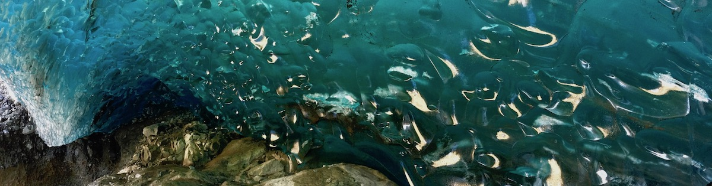
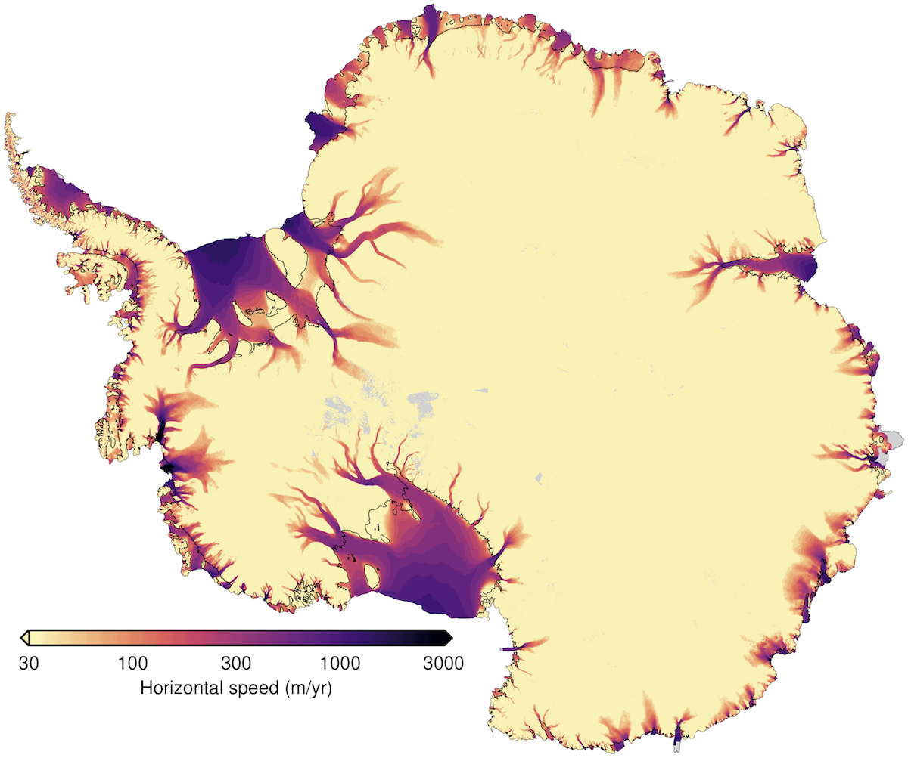
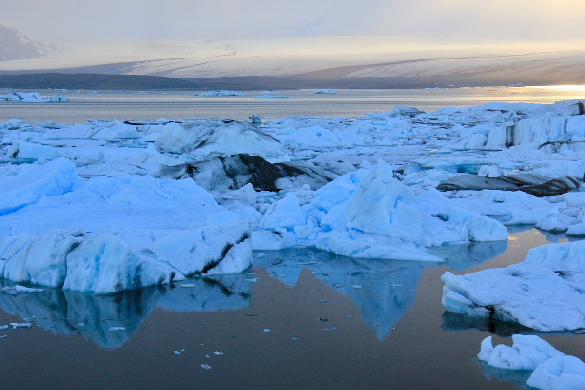
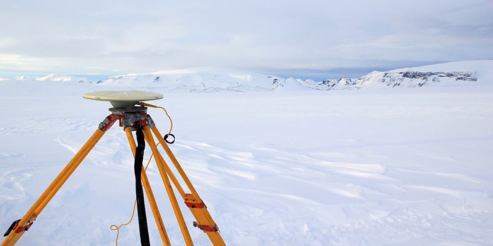
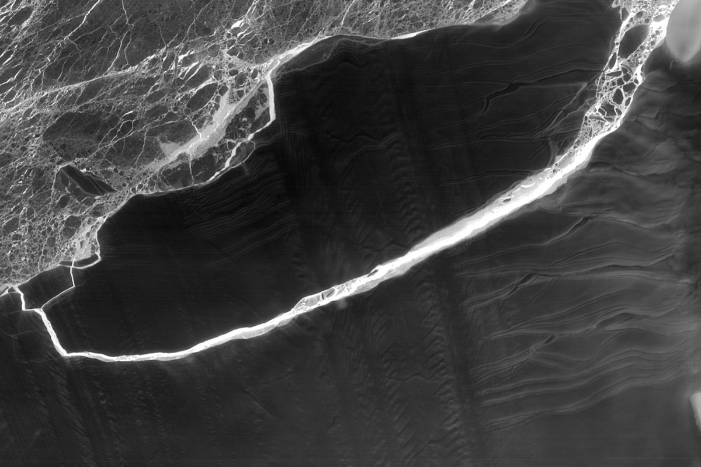

The Group
We are an interdisciplinary group of geophysicists, glaciologists, mechanicians, and geodesists who study the interactions between the climate, the cryosphere, and the solid earth. We use a combination of geodetic observations—primarily interferometric synthetic aperture radar (InSAR)—and physical models to study dynamical systems and their various responses to environmental forcing.
We take a natural-laboratory approach to science and prefer to focus on observable short-timescale (hourly to sub-decadal) variations in the dynamics of large-scale systems in response to known forcings. Our ultimate goal is to establish clear connections between observations and first principles. Read more.
Recent Publications

A model of water extraction from the subglacial hydrologic system under idealized conditions

Rates of sea-level rise are highly sensitive to ice viscosity parameters in model benchmarks

Estimating effective elasticity in grounding zones of the Ross Ice Shelf with tidal flexure from ICESat-2

Implications of shallow-shell models for topographic relaxation on icy satellites

Simulating seasonal evolution of subglacial hydrology at a surging glacier in the Karakoram
